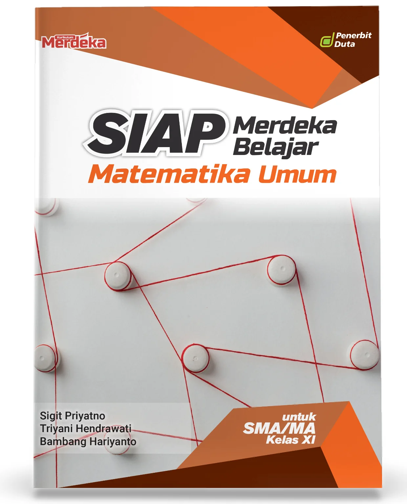

Bedah Buku: Buku Web
Ditulis oleh: Rintho Rante Rerung

Buku Pemrograman Web Dasar membahas konsep dasar pembuatan website secara praktis dan terstruktur. Buku ini dirancang untuk pemula yang ingin mengenal dunia web development dari nol.
“Membangun website dimulai dari pemahaman dasar yang kuat.”
Materi dalam buku ini mencakup HTML sebagai struktur halaman, CSS untuk mengatur tampilan, serta PHP sebagai bahasa pemrograman sisi server. Setiap topik disajikan dengan penjelasan yang jelas dan contoh yang mudah dipahami.
Buku ini cocok untuk pelajar, mahasiswa, maupun pemula umum yang ingin belajar pemrograman web secara bertahap dan aplikatif, baik untuk keperluan belajar mandiri maupun pendukung pembelajaran di sekolah.
Bedah Buku: The Art of Mechanical Design
Ditulis oleh: David Ullman

The Art of Mechanical Design membahas perancangan mekanik sebagai perpaduan antara ilmu teknik dan seni berpikir. Buku ini mengajak pembaca memahami bagaimana sebuah ide mekanik dikembangkan menjadi desain yang fungsional, efisien, dan memiliki keindahan dalam kesederhanaannya.
“Mechanical design is not only about calculations, but about making thoughtful decisions.”
Buku ini menekankan proses berpikir seorang engineer dalam memecahkan masalah desain, mulai dari analisis kebutuhan, pengembangan konsep, hingga pengambilan keputusan teknis. Disertai contoh dan pendekatan sistematis, pembahasan dalam buku ini membantu pembaca memahami desain mekanik secara menyeluruh.
Cocok dibaca oleh mahasiswa teknik, praktisi mekanik, serta pembaca yang tertarik pada dunia rekayasa dengan sudut pandang kreatif. Buku ini sangat relevan bagi mereka yang ingin menjadi engineer yang tidak hanya kuat secara teknis, tetapi juga matang dalam proses desain.
Bedah Buku: Structures Or Why Things Don’t Fall Down
Ditulis oleh: J.E. Gordon

Structures: Or Why Things Don’t Fall Down mengajak pembaca memahami dunia struktur dengan cara yang ringan, naratif, dan penuh rasa ingin tahu. Buku ini menjelaskan mengapa bangunan, jembatan, dan berbagai struktur dapat berdiri kokoh, tanpa terjebak pada rumus yang kaku.
“Understanding structures is understanding how the world quietly holds itself together.”
J.E. Gordon menyampaikan konsep struktur, material, dan gaya dengan bahasa cerita yang mudah dicerna. Prinsip-prinsip teknik sipil dijelaskan melalui contoh sehari-hari, sejarah, dan pengamatan sederhana, sehingga pembaca dapat memahami logika struktur secara intuitif.
Buku ini cocok untuk mahasiswa teknik sipil, arsitektur, maupun pembaca umum yang tertarik pada dunia bangunan dan rekayasa. Sangat direkomendasikan bagi mereka yang ingin memahami struktur dari sisi ilmiah sekaligus estetis — teknik yang berpikir, bukan sekadar menghitung.
Structures: Or Why Things Don’t Fall Down mengajak pembaca memahami dunia struktur dengan cara yang ringan, naratif, dan penuh rasa ingin tahu. Buku ini menjelaskan mengapa bangunan, jembatan, dan berbagai struktur dapat berdiri kokoh, tanpa terjebak pada rumus yang kaku.
“Understanding structures is understanding how the world quietly holds itself together.”
J.E. Gordon menyampaikan konsep struktur, material, dan gaya dengan bahasa cerita yang mudah dicerna. Prinsip-prinsip teknik sipil dijelaskan melalui contoh sehari-hari, sejarah, dan pengamatan sederhana, sehingga pembaca dapat memahami logika struktur secara intuitif.
Buku ini cocok untuk mahasiswa teknik sipil, arsitektur, maupun pembaca umum yang tertarik pada dunia bangunan dan rekayasa. Sangat direkomendasikan bagi mereka yang ingin memahami struktur dari sisi ilmiah sekaligus estetis — teknik yang berpikir, bukan sekadar menghitung.
Bedah Buku: Syarah shahih bukhari
Ditulis oleh: Syaikh Muhammad Bin Shalih Al-Utsaimin

Syarah Shahih Bukhari karya Syaikh Muhammad bin Shalih Al-Utsaimin membimbing pembaca memahami Shahih Bukhari secara mendalam dengan cara yang jelas, sistematis, dan mudah dipahami. Buku ini menjelaskan makna hadits, konteksnya, serta hikmah yang terkandung di dalamnya, tanpa membuat pembaca tersesat dalam istilah yang sulit.
“Ilmu hadits adalah cahaya yang menerangi hati dan kehidupan seorang Muslim.”
Syaikh Al-Utsaimin menyampaikan penjelasan dengan bahasa yang ringan namun tetap ilmiah. Setiap hadits dibahas secara rinci, disertai konteks fiqh dan adab, sehingga pembaca tidak hanya memahami teks, tetapi juga dapat mengamalkan ajarannya dalam kehidupan sehari-hari.
Buku ini cocok untuk pelajar, guru, maupun setiap Muslim yang ingin mendalami ilmu hadits. Sangat direkomendasikan bagi mereka yang ingin memahami Shahih Bukhari dari perspektif Ahlus Sunnah wal Jamaah — ilmu yang menuntun, bukan sekadar membaca.
Bedah Buku: The Architecture of Happines
Ditulis oleh: Rintho Rante Rerung

Buku The Architecture of Happiness karya Alain de Botton mengajak pembaca memahami arsitektur bukan hanya sebagai bangunan, tetapi sebagai bagian dari pengalaman emosional dan kehidupan manusia sehari-hari.
“Arsitektur memiliki kekuatan untuk memengaruhi cara kita merasa, berpikir, dan hidup.”
Melalui bahasa yang ringan dan reflektif, buku ini membahas bagaimana bentuk, ruang, warna, dan detail arsitektur dapat menghadirkan rasa nyaman, makna, dan kebahagiaan. Alain de Botton mengaitkan desain bangunan dengan filsafat, seni, dan psikologi manusia tanpa terjebak pada pembahasan teknis yang rumit.
Buku ini cocok untuk pembaca umum, pecinta desain, pelajar arsitektur, maupun siapa saja yang ingin melihat bangunan dan kota dari sudut pandang yang lebih manusiawi dan mendalam.
Bedah Buku: The Art of Graphic Design
Ditulis oleh: Jessica Helfand

The Art of Graphic Design mengajak pembaca memahami dunia **desain grafis** dengan cara yang praktis, inspiratif, dan penuh kreativitas. Buku ini menjelaskan konsep desain, tipografi, layout, dan warna, tanpa membuat pembaca terjebak pada teori yang kaku.
“Design is not just what it looks like and feels like. Design is how it works.”
Bradbury Thompson menyampaikan prinsip desain dengan bahasa yang mudah dipahami. Setiap halaman penuh contoh visual dan panduan praktis, sehingga pembaca dapat memahami logika desain secara intuitif dan kreatif.
Buku ini cocok untuk mahasiswa desain, desainer pemula, maupun siapa saja yang ingin mengembangkan kreativitas visual. Sangat direkomendasikan bagi mereka yang ingin memahami desain dari sisi teori sekaligus praktik — **berpikir kreatif, bukan sekadar meniru**.
Bedah Buku: SIAP Merdeka Belajar: Matematika SMA/MA Kelas X
Ditulis oleh: Kamta Agus Sajaka, Sigit Priyatno & Bambang Hariyanto

SIAP Merdeka Belajar: Matematika SMA/MA Kelas X dirancang untuk membantu siswa memahami konsep matematika secara bertahap, sistematis, dan sesuai dengan kurikulum Merdeka Belajar. Buku ini menyajikan materi dengan bahasa yang jelas, contoh soal kontekstual, serta latihan yang mendorong pemahaman konsep, bukan sekadar hafalan rumus.
“Belajar matematika bukan hanya tentang menghitung, tetapi memahami pola dan logika di baliknya.”
Materi di dalam buku ini mencakup topik-topik penting kelas X seperti aljabar, fungsi, persamaan, pertidaksamaan, serta konsep dasar statistika dan peluang. Setiap bab dilengkapi dengan pembahasan contoh soal dan latihan evaluasi untuk mengukur pemahaman siswa.
Buku ini sangat cocok digunakan oleh siswa SMA/MA kelas X sebagai pendamping belajar di sekolah maupun belajar mandiri di rumah. Dengan pendekatan yang terstruktur dan latihan yang variatif, buku ini membantu siswa membangun dasar matematika yang kuat untuk jenjang berikutnya.